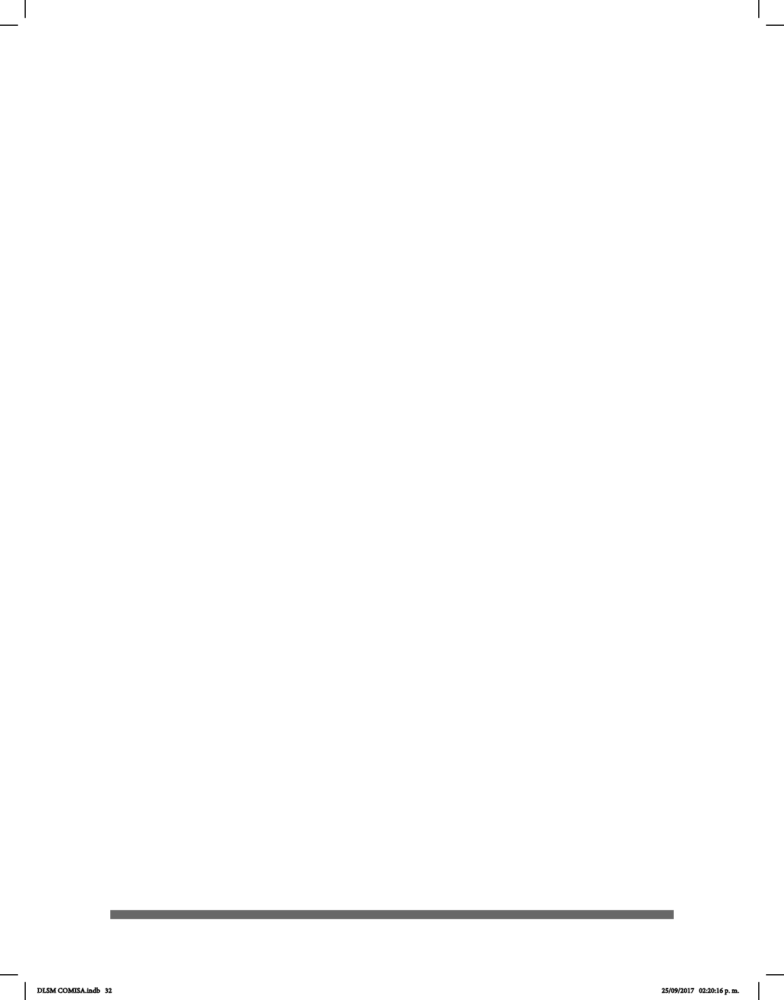

32
Mormona, entre otros más, que cuentan con materiales del uso de Lengua de Señas
Mexicana.
Como ejemplo, los Testigos de Jehová producen videos para LSM y otras 85 lenguas de
señas en el mundo. Su primer video producido en LSM llevó el título “¿Qué exige Dios
para nosotros?” y fue publicado en año 2000 en formato VHS. Además se han producido
372 publicaciones impresas en LSM.
• Las Actividades deportivas: Las personas sordas participan activamente en
deportes como el atletismo, fútbol, baloncesto, voleibol, entre otros. La comunidad
sorda se enorgullece de sus miembros. El equipo de voleibol ha participado en
muchas competencias dentro y fuera del país. Algunos adultos sordos han sobresalido en
ciclismo, donde han demostrado ser buenos competidores para las personas oyentes.
Sin embargo, el área de deportes se ha rezagado debido a las instalaciones y recursos
inadecuados. La Federación Mexicana para Deportes de Sordos (FEMEDESOR) es
miembro del Comité Sordolimpiadas.
• Las Actividades culturales. Teatro: Otra estrategia utilizada por el movimiento
asociativo se llama “Seña y Verbo: teatro para Sordos” la cual ha cambiado la
percepción de la sociedad hacia los sordos y ha aumentado la participación de las
personas en el teatro. Las personas sordas son parte del teatro de la Ciudad de México
a pesar de que todavía no sea conocido por el público oyente.
Cabe mencionar que el Teatro para Sordos se fundó en 1993 por iniciativa de Alberto
Lomnitz, con la colaboración de otros profesionales del teatro y el apoyo de varias
instituciones gubernamentales y privadas. Ha llevado a cabo una serie de obras para
educar, sensibilizar y entretener a las personas sordas y demás público. Todas las
obras se representan efectivamente a través de un medio de LSM y español (bilingüe),
donde retratan la cultura de las personas sordas y el espíritu de la comunidad. Las
personas oyentes comparten la experiencia a través de intérpretes teatrales.
La idea es presentar obras para oyentes con un intérprete de lengua de señas con el n
de atraer a espectadores sordos que dependan de la lengua de señas para acceder al
diálogo como se ve en los países desarrollados.
• Las Actividades Políticas: Las personas sordas en la Ciudad de México han
participado en las decisiones sobre temas de discapacidad que inuyen en sus
vidas mediante el ejercicio del voto y recepción de información acerca de los
procesos de gobierno a nivel local y nacional. Las personas sordas de la Ciudad de México
están orgullosas de tener el apoyo de aproximadamente 51 organizaciones,
asociaciones, instituciones, centros de las personas sordas y otros consejeros en
representación de sordos y personas con discapacidad en los consejos locales en
los distintos niveles. Algunos miembros sordos participan en posiciones clave como
empleados en las Organizaciones No Gubernamentales (ONG) o como parte del
gobierno en el Consejo Nacional para el Desarrollo y la Inclusión de Personas con
Discapacidad (CONADIS) o en el Instituto para la Integración al Desarrollo de las
Personas con Discapacidad de la Ciudad de México (INDEPEDI), Secretarías,
Delegaciones, etc.
DLSM COMISA.indb 32 25/09/2017 02:20:16 p. m.